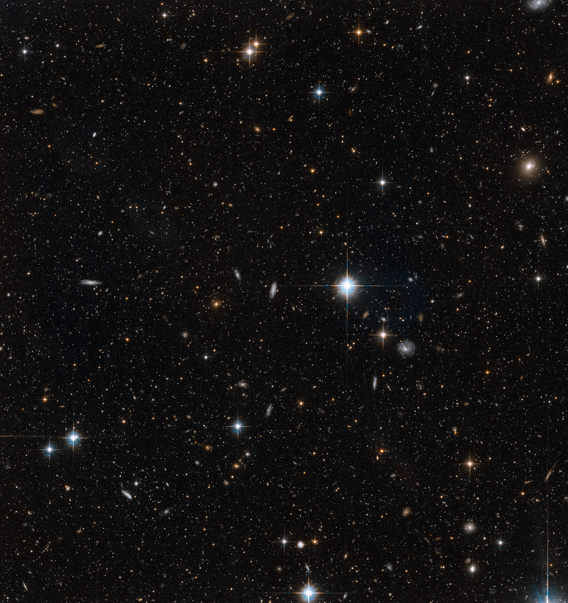

A star stream (also called a stellar stream) is an elongated arc of stars orbiting a galaxy, formed when a globular cluster or dwarf galaxy is gradually torn apart by tidal forces. As the smaller system loses stars, they spread along its orbit, tracing a thin ribbon across the sky. Star streams are not to be confused with meteor streams, which are debris trails left by comets.

NASA, ESA and T.M. Brown (STScI)
How streams form
As a satellite orbits its host galaxy, tidal forces are strongest at the satellite's near and far sides. Stars are stripped through the inner and outer Lagrange points (L1 and L2), forming two tails. Stars pulled from the inner side gain orbital energy and run ahead as the leading arm, while those stripped from the outer side lose energy and fall behind as the trailing arm. Because these stripped stars follow orbits very close to the original, the stream traces the path of the disrupted system across the sky. Streams can stay coherent for billions of years if their orbits are stable, and astronomers call these 'dynamically cold' streams.
Two types
Globular cluster streams are thin and narrow, typically around 100 pc wide, with regular clumps and gaps along their length. They are the most common type in the Milky Way. Dwarf galaxy streams are much wider and smoother. The Sagittarius stream, torn from the Sagittarius Dwarf Spheroidal Galaxy, is roughly 6 kpc wide and wraps nearly all the way around the Milky Way. It was identified through stellar overdensities in the 1990s and mapped in three dimensions by Majewski et al. in 2003 using the 2MASS survey.
Notable examples
Palomar 5 is the best-studied globular cluster stream. Its progenitor cluster is still visible at a distance of 23.2 kpc from the Sun, and its tidal tails stretch more than 10 kpc across the sky. The stream was discovered in 2001 by Odenkirchen et al. using the Sloan Digital Sky Survey (SDSS). GD-1 is another thin stream, spanning more than 80 degrees on the sky with no surviving progenitor. Gaps in GD-1 are thought to be caused by gravitational kicks from dark matter subhalos with masses around 106 solar masses, making it one of the best tests of the cold dark matter model on small scales. Outside the Milky Way, tidal streams have been found around galaxies such as the Andromeda Galaxy (M31), M63, and NGC 5907, revealing their merger histories.
The Gaia revolution
Before the Gaia satellite, only about 10 stellar streams were known in the Milky Way, found mostly through photometric surveys like SDSS. After Gaia Data Release 2 in 2018, which provided precise proper motions for stars across the sky, the number jumped to more than 120. In 2026, a University of Michigan team reported 87 additional stream candidates. The Vera C. Rubin Observatory and the Nancy Grace Roman Space Telescope are expected to push the census to around 1,000 globular cluster streams.
Stellar streams trace the gravitational field of the host galaxy and are used to measure the Milky Way's total mass, including its dark matter halo. Each stream is, in effect, the ghost of a globular cluster or dwarf galaxy that was cannibalised, making streams a key tool in galactic archaeology.
Kapteyn's star streams
The term "star stream" has a separate, older meaning. In 1904, Jacobus Kapteyn announced that nearby stars were not moving randomly but fell into two groups heading in roughly opposite directions, toward Orion and Sagittarius. In 1927, Jan Oort, Kapteyn's former student, showed that this pattern was a natural result of differential galactic rotation: inner stars overtake the Sun while outer stars lag behind. Modern astronomers use "star stream" almost exclusively for tidal structures, but the Kapteyn sense survives in historical and kinematic literature.